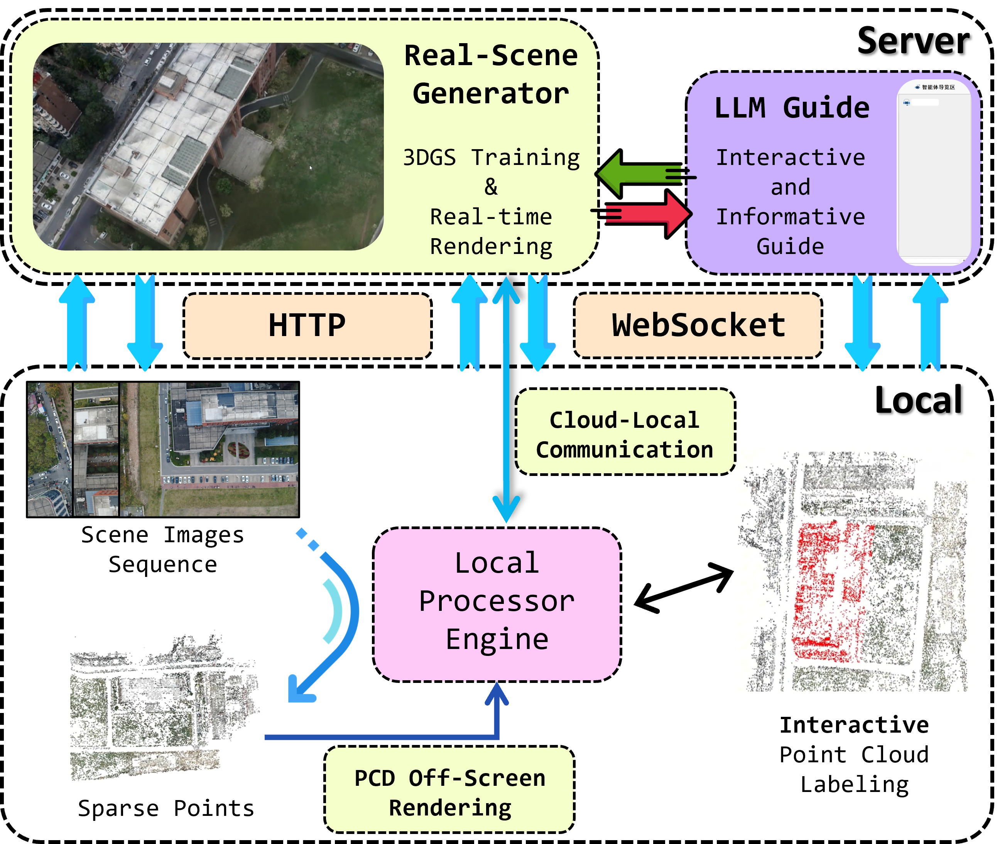

A Python-based local software and cloud service system that integrates 3D functionalities including sparse reconstruction, point cloud regions annotation, 3D Gaussian Splatting (3DGS) real-scene model construction on-cloud, real-scene rendering on-cloud, and LLM-agent guidance. The system can support applications in tourism and disaster overview, and currently supports fast deployment on both Local (Windows 11) and Server (Linux) environments.

The third-party libraries used in this system are: PyQt5, PyColmap, PyOpenGL, PyVista, OpenAI Python, Open3D, WebSocket-Client, FastAPI, uvicorn, plyfile, 3DGS, Python-Multipart
This project is released under a Non-Commercial Research License.
The software is free for academic research and non-commercial use.
Commercial use requires a separate license from the authors.
See the LICENSE file for details.
For commercial licensing, please contact:
rs_lover@163.com
If you find this project useful in your research, please consider citing:
@misc{tang2026informative,
title = {Informative Scene-Reconstruction App},
author = {Haojun Tang and Jingran Zhang and Siyuan Zou},
year = {2026},
note={GitHub repository},
howpublished={https://github.com/DonaldTrump-coder/Informative-Scene-Reconstruction-App}
} Informative Scene-Reconstruction App
Informative Scene-Reconstruction App